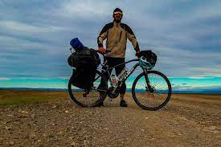

Ara Salvaje
Es una ficción documental en 4K de bici de montaña que trata dela lucha por la libertad del último gran río salvaje del Pirineo, el río Ara, y la persecución del sueño del rider argentino Martín Campoy a lomos de su bicicleta. Ara Salvaje no es sólo una película de Bici de montaña en el Pirineo.

Pedal Women
En enero del 2016, Iria abre la primera comunidad femenina de cicloviajeras de habla hispana: soycicloviajera (Instagram y Facebook). Hoy ya son 1.550 mujeres. “Encima de la bici, la vida es más bonita”, asegura. Se declara coruñesa, clicloviajera y apasionada hasta la médula de la vida nómada. No para quieta. Comenzó a viajar de manera independiente a los 18 y hace 13 años que vagabundea por el mundo. Y tiene muy claro que esa forma de vida le ha cambiado radicalmente sus valores y, en consecuencia, sus prioridades. Se deja llevar por la intuición y el corazón. Practica el voluntariado desde los 16 años y practica el trueque como forma eficiente para conseguir lo que necesita. Su ideal es la autosuficiencia.

La historia del argentino que viaja por Sudamérica en dos ruedas
Nicolás es un biciviajero que partió hace tres meses y medio en Ushuaia, Argentina, ha cruzado la cordillera de Los Andes cuatro veces y su destino es Bolivia. Nos cuenta cómo es viajar en bicicleta y enfrentarse al día a día, a la noche y a la soledad.
